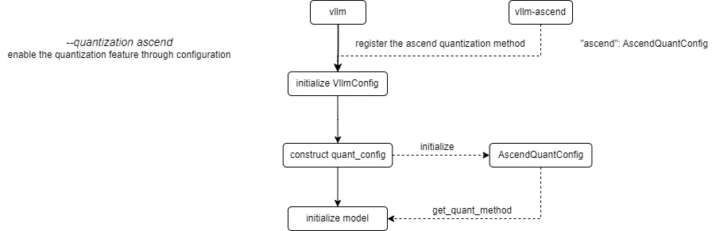
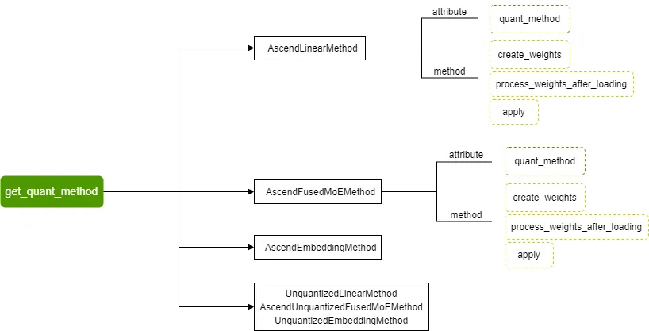
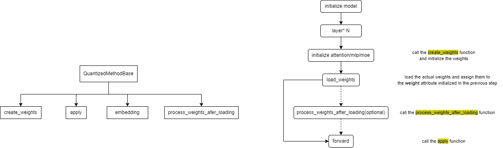

Quantization Adaptation Guide
This document provides guidance for adapting quantization algorithms and models related to ModelSlim.
Quantization Feature Introduction
Quantization Inference Process
The current process for registering and obtaining quantization methods in vLLM Ascend is as follows:

vLLM Ascend registers a custom Ascend quantization method. By configuring the --quantization ascend parameter (or quantization="ascend" for offline), the quantization feature is enabled. When constructing the quant_config, the registered AscendModelSlimConfig is initialized and get_quant_method is called to obtain the quantization method corresponding to each weight part, stored in the quant_method attribute.
Currently supported quantization methods include AscendLinearMethod, AscendFusedMoEMethod, AscendEmbeddingMethod, and their corresponding non-quantized methods:

The quantization method base class defined by vLLM and the overall call flow of quantization methods are as follows:

The embedding method is generally not implemented for quantization, focusing only on the other three methods.
The create_weights method is used for weight initialization; the process_weights_after_loading method is used for weight post-processing, such as transposition, format conversion, data type conversion, etc.; the apply method is used to perform activation quantization and quantized matrix multiplication calculations during the forward process.
We need to implement the create_weights, process_weights_after_loading, and apply methods for different layers (attention, mlp, moe).
Supplement: When loading the model, the quantized model's description file quant_model_description.json needs to be read. This file describes the quantization configuration and parameters for each part of the model weights, for example:
{
"model.layers.0.linear_attn.dt_bias": "FLOAT",
"model.layers.0.linear_attn.A_log": "FLOAT",
"model.layers.0.linear_attn.conv1d.weight": "FLOAT",
"model.layers.0.linear_attn.in_proj_qkvz.weight": "W8A8_DYNAMIC",
"model.layers.0.linear_attn.in_proj_qkvz.weight_scale": "W8A8_DYNAMIC",
"model.layers.0.linear_attn.in_proj_qkvz.weight_offset": "W8A8_DYNAMIC",
"model.layers.0.linear_attn.in_proj_ba.weight": "FLOAT",
"model.layers.0.linear_attn.norm.weight": "FLOAT",
"model.layers.0.linear_attn.out_proj.weight": "FLOAT",
"model.layers.0.mlp.gate.weight": "FLOAT",
"model.layers.0.mlp.experts.0.gate_proj.weight": "W8A8_DYNAMIC",
"model.layers.0.mlp.experts.0.gate_proj.weight_scale": "W8A8_DYNAMIC",
"model.layers.0.mlp.experts.0.gate_proj.weight_offset": "W8A8_DYNAMIC",
}
Based on the above content, we present a brief description of the adaptation process for quantization algorithms and quantized models.
Quantization Algorithm Adaptation
Step 1: Algorithm Design. Define the algorithm ID (e.g.,
W4A8_DYNAMIC), determine supported layers (linear, moe, attention), and design the quantization scheme (static/dynamic, pertensor/perchannel/pergroup).Step 2: Registration. Use the
@register_schemedecorator invllm_ascend/quantization/methods/registry.pyto register your quantization scheme class.
from vllm_ascend.quantization.methods import register_scheme, AscendLinearScheme
@register_scheme("W4A8_DYNAMIC", "linear")
class AscendW4A8DynamicLinearMethod(AscendLinearScheme):
...
@register_scheme("W4A8_DYNAMIC", "moe")
class AscendW4A8DynamicFusedMoEMethod(AscendMoEScheme):
...
Step 3: Implementation. Create an algorithm implementation file, such as
vllm_ascend/quantization/methods/w4a8.py, and implement the method class and logic.Step 4: Testing. Use your algorithm to generate quantization configurations and verify correctness and performance on target models and hardware.
Quantized Model Adaptation
Adapting a new quantized model requires ensuring the following three points:
The original model has been successfully adapted in
vLLM Ascend.Fused Module Mapping: Add the model's
model_typetopacked_modules_model_mappinginvllm_ascend/quantization/modelslim_config.py(e.g.,qkv_proj,gate_up_proj,experts) to ensure sharding consistency and correct loading.
packed_modules_model_mapping = {
"qwen3_moe": {
"qkv_proj": [
"q_proj",
"k_proj",
"v_proj",
],
"gate_up_proj": [
"gate_proj",
"up_proj",
],
"experts":
["experts.0.gate_proj", "experts.0.up_proj", "experts.0.down_proj"],
},
}
All quantization algorithms used by the quantized model have been integrated into the
quantizationmodule.
Currently Supported Quantization Algorithms
vLLM Ascend supports multiple quantization algorithms. The following table provides an overview of each quantization algorithm based on the implementation in the vllm_ascend.quantization module:
Algorithm |
Weight |
Activation |
Weight Granularity |
Activation Granularity |
Type |
Description |
|---|---|---|---|---|---|---|
|
INT4 |
FP16/BF16 |
Per-Group |
Per-Tensor |
Static |
4-bit weight quantization with 16-bit activation precision, specifically designed for MoE model expert layers, supporting int32 format weight packing |
|
INT8 |
FP16/BF16 |
Per-Channel |
Per-Tensor |
Static |
8-bit weight quantization with 16-bit activation precision, balancing accuracy and performance, suitable for linear layers |
|
INT8 |
INT8 |
Per-Channel |
Per-Tensor |
Static |
Static activation quantization, suitable for scenarios requiring high precision |
|
INT8 |
INT8 |
Per-Channel |
Per-Token |
Dynamic |
Dynamic activation quantization with per-token scaling factor calculation |
|
INT4 |
INT8 |
Per-Group |
Per-Token |
Dynamic |
Supports both direct per-channel quantization to 4-bit and two-step quantization (per-channel to 8-bit then per-group to 4-bit) |
|
INT4 |
INT4 |
Per-Channel |
Per-Token |
Dynamic |
Uses FlatQuant for activation distribution smoothing before 4-bit dynamic quantization, with additional matrix multiplications for precision preservation |
|
INT8 |
INT8 |
Per-Channel |
Per-Tensor/Token |
Mixed |
PD Colocation Scenario uses dynamic quantization for both P node and D node; PD Disaggregation Scenario uses dynamic quantization for P node and static for D node |
Static vs Dynamic: Static quantization uses pre-computed scaling factors with better performance, while dynamic quantization computes scaling factors on-the-fly for each token/activation tensor with higher precision.
Granularity: Refers to the scope of scaling factor computation (e.g., per-tensor, per-channel, per-group).